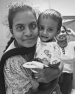

basically my family is a biology family,
cause mom is a nurse and sister is a doctor
two little pumpkins one is twoneger
and other is just 90days
(sorry we dont take her pictures yet).
Families can be Eternal
Introducing Each One
Mother
The Queen in My House
My mom is the queen of our house. She is very hardworking and my biggest inspiration. I love her to the moon and back. She is the one who raised my sister and me. She’s not just our mom she’s our best friend. this picture is one of my favourite in my album

sister
The craziest In Home
she is my other best friend at home my sibling, my older sister, Prasanna. We always fight a lot, but no matter what, she’s the one who supports me even in my worst moments. She makes our house lively with her funny jokes and crazy energy. Even though we argue sometimes, I can’t imagine my life without her.
Nephew
My Favourite at Home
The small little pumpkin he’s my nephew. I miss him a lot; he’s just 2 years old. This is my favourite picture because it was the first time he called me by my name. He’s also the one who took this selfie all by himself we didn’t even know until I found it in the gallery!